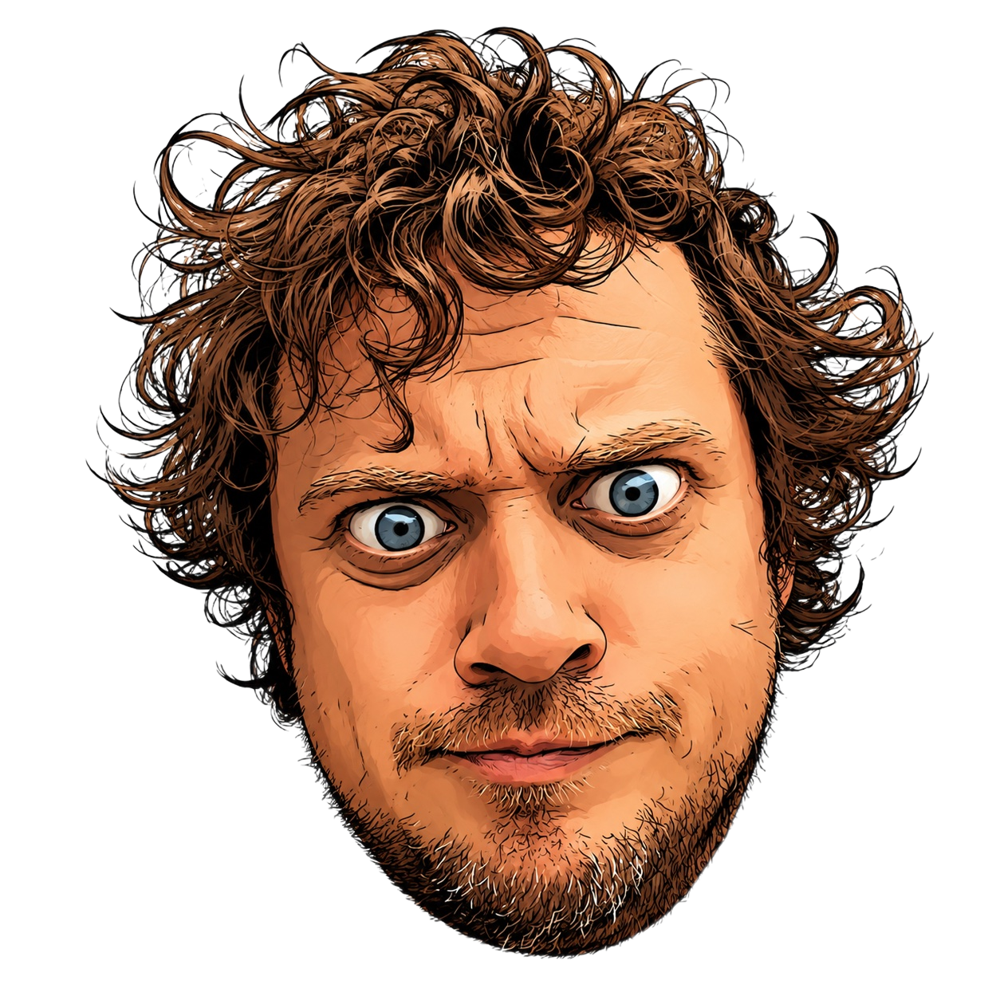
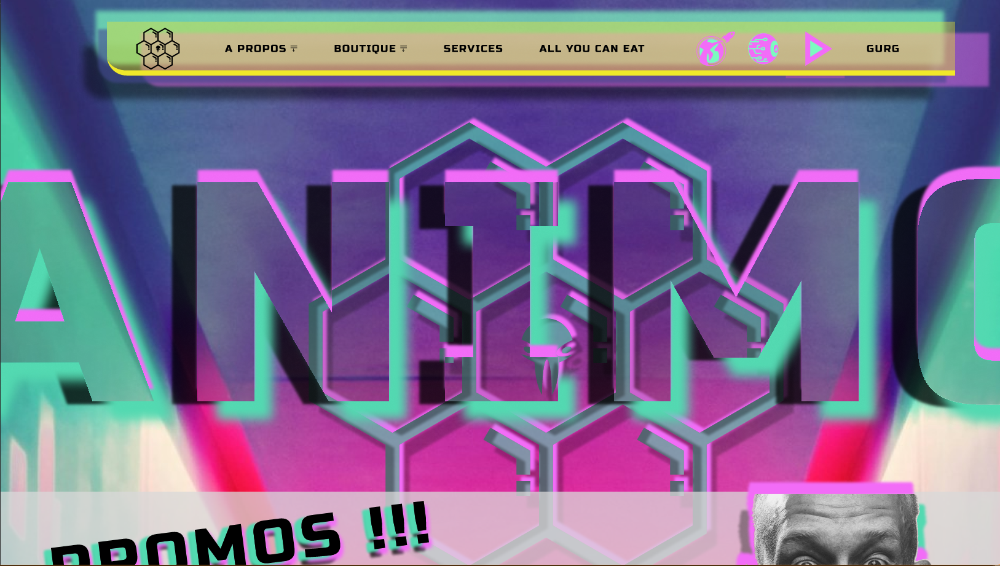

Portfolio
Projet Animo

Projet Figma. Maquette de 2 pages avec certains éléments fonctionnels. Version desktop et mobile.
Site Desktop Site Mobile
Projet 2
Description du projet 2.


Projet Figma. Maquette de 2 pages avec certains éléments fonctionnels. Version desktop et mobile.
Site Desktop Site Mobile
Description du projet 2.